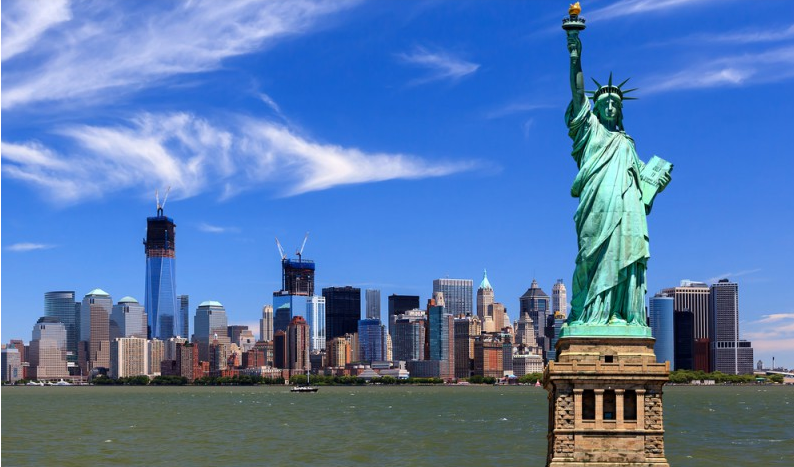
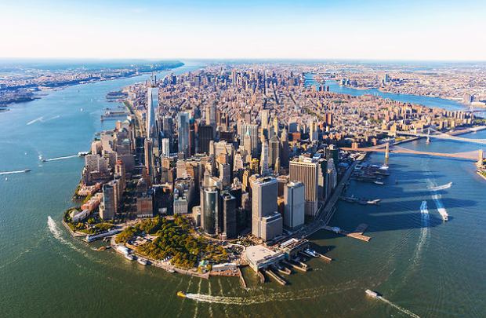
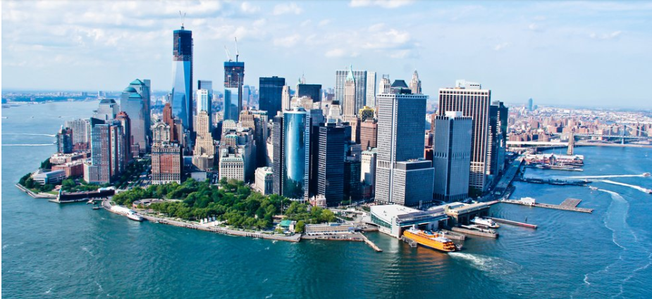
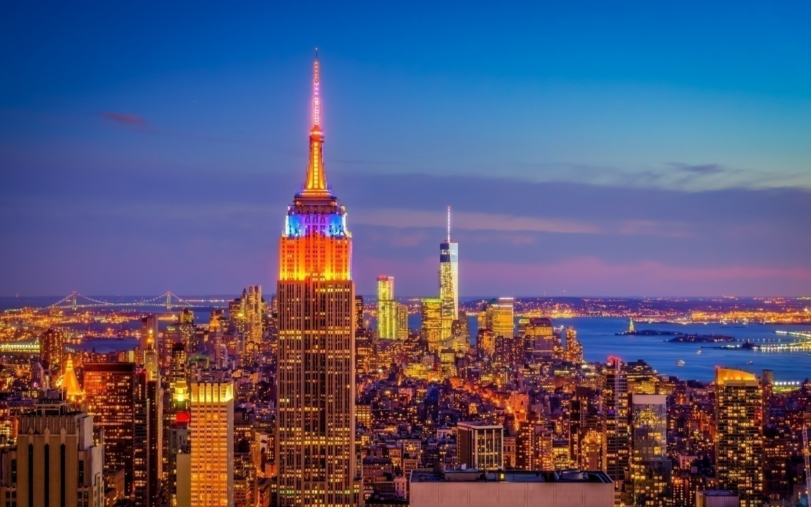
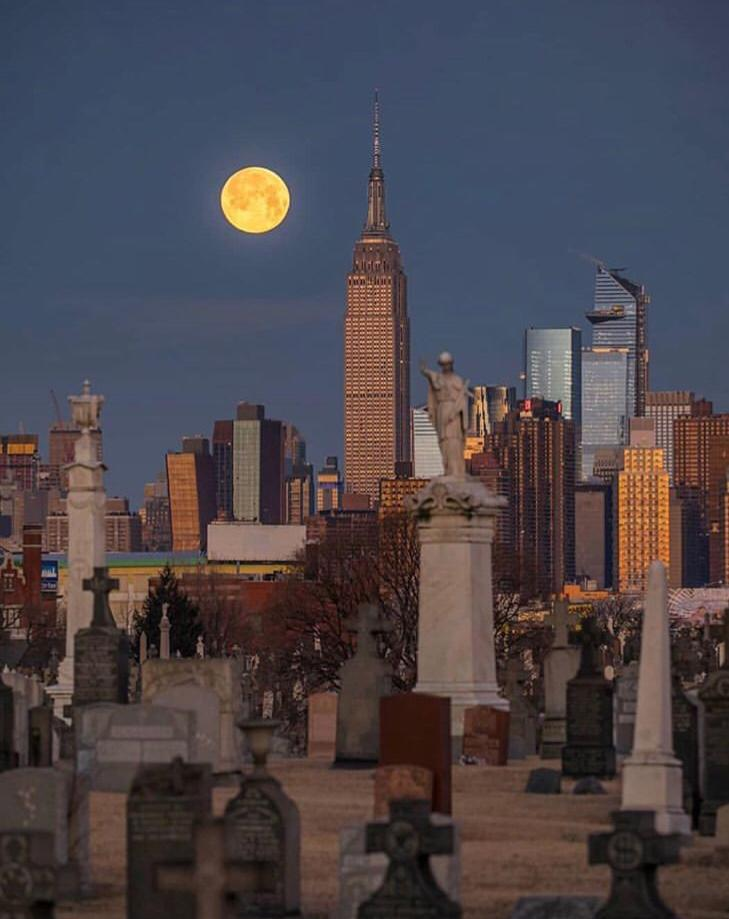
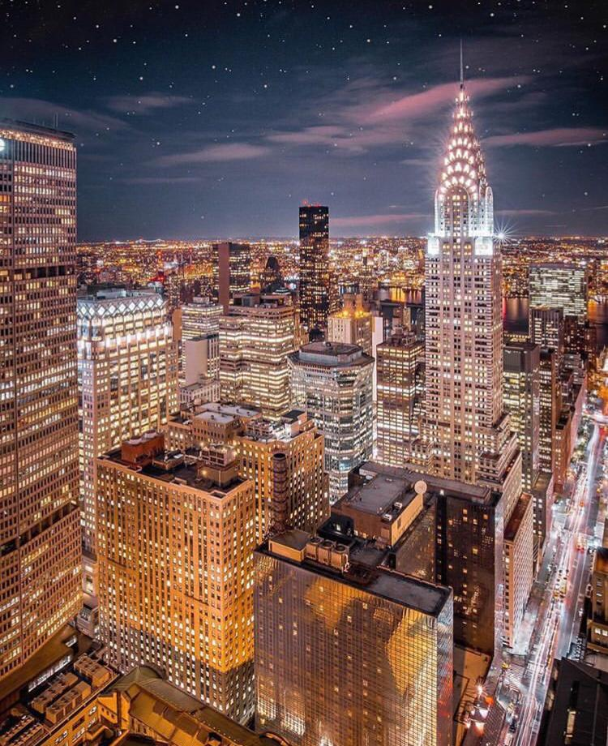
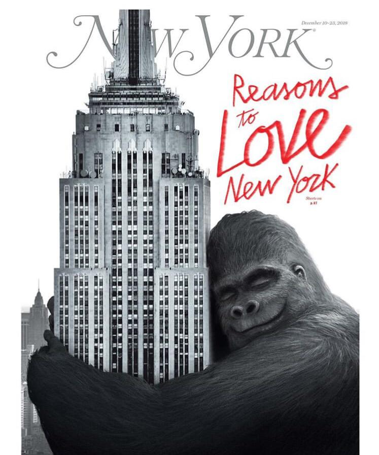

BIENVENUE A NEW YORK
  
L’Empire State Building




En 2019,il est troisiéme immeuble de la ville de New York de par sa hauteur derriere le One World Trade
Center et le 432éme park avenue. il avait retrouvé sa premiére place apres l'attentat terroriste du 11 septembre 2001
qui a causé la destruction des tours jumelles du World Trade Center, la willis tower,432park avenue et
la trump international hotel and tower.l'empire state building a été pendant des decennies l'immeuble le plus haut du monde,
il tire son surnom de l'etat de New York the empire state.
consideré comme l'une des septs merveille du monde, il est caracteristique du panorama urbain new yorkais Au 86éme étage,
un observatoire ouvert au public offre une vue panoramiaue impressionnante sur New York.le sommet de l'edifice est éclairé en
fonction des événements du calendrier,de la fete national,au marathon de new york.
la mise en scene la plus impressionnante est surement le film king kong de 1993
dans lequel le gorille l'escalade pour echapper a ses poursuivants et aux avions.
il y a encore dautres series et films tels que gossip girl,friends,how i met your mother...
L’Empire State Building : un monument de New York
L’Empire State Building, depuis le Frank Sinatra Park, à Hoboken.
L’Empire State Building est aujourd’hui le gratte-ciel le plus représentatif de New York, et peut être aussi l’un des gratte-ciel les plus célèbres au monde. Toutefois, il ne constitue pas, si l’on se réfère aux nombreux sondages, l'édifice préféré des habitants de Big Apple31, en apparaissant souvent classé derrière son grand rival dans les années 1930, le Chrysler Building de William Van Alen32.
Depuis le 18 mai 1981, l’Empire State Building possède la distinction officielle de monument (landmark), distinction attribuée par la New York City Landmarks Preservation Commission (commission de préservation des monuments importants de la ville de New York). En 1986, l’Empire State Building a même reçu le titre de « Monument national historique » (National Historic Landmark) de la part du département de l'Intérieur des États-Unis. Une plaque commémorative a été installée à cette occasion. L’immeuble est aujourd’hui protégé ce qui traduit son importance pour la ville de New York, surtout depuis la disparition des deux tours jumelles qui avaient changé la Manhattan Skyline33 en 2001.
L’Empire State Building est un véritable monument de New York, et est parfois cité parmi les sept merveilles du monde moderne. Depuis juillet 1963, le hall du bâtiment abrite huit tableaux massifs, réalisés par Roy Sparkia et son épouse Renee Nemerov ; ils représentent les sept merveilles du monde, alors que le huitième représente l’Empire State Building34. Le bâtiment est visité chaque année par environ 2,5 millions de personnes35.
L’entrée du bâtiment située sur la Cinquième avenue, munie de six fenêtres, sert de salle d'exposition à des œuvres d’art provenant des nombreux musées de New York. L’exposition change plusieurs fois par an.
lors de la période de migration des oiseaux au printemps et en automne, les lumières du sommet de l’Empire State Building sont éteintes les nuits de brouillard, afin que les oiseaux ne se trompent pas de route et ne viennent pas s’écraser sur le gratte-ciel, attirés par les spots.
Le projet
Les plans de l’Empire State Building ont été réalisés par la compagnie d’architectes Shreve, Lamb and Harmon. L’architecte en chef, William Lamb, décrit le projet qu’on lui avait attribué en ces mots :
« Le programme tient en quelques lignes : budget fixé, pas plus de 8,50 mètres entre la fenêtre et le couloir et autant d’étages que possible. Façade en calcaire et date d’achèvement des travaux le 1er mai 1931, ce qui signifie un délai d’un an et demi à partir des ébauches des plans6. »
Un skyboy, ouvrier travaillant sur le chantier de l’Empire State Building, sans protection au-dessus du vide. Au second plan, le Chrysler Building.
Les plans furent achevés en l’espace de deux semaines et s’inspiraient de ceux du Reynolds Building qui avait été réalisés par le même cabinet d’architectes, et ceux de la Carew Tower, située à Cincinnati, qui avait, elle, été réalisée par l'architecte Walter W. Ahlschlager (en).
La construction fut placée sous la direction de Starrett Brothers and Eken. Le chantier était financé par John J. Raskob (ex-dirigeant de General Motors), qui avait créé, en 1929, associé à Coleman du Pont (en), Louis G. Kaufman (en) et Ellis P. Earle l'Empire State Inc. La construction était ainsi supervisée par Alfred E. Smith, ancien gouverneur démocrate de l’État de New York et candidat malheureux de la présidentielle de 1928, nommé président de l’entreprise par Raskob7. Le coût total du projet s’éleva, terrain compris, à 40 948 900 $ mais, du fait du krach boursier de 1929, la valeur du bâtiment ne dépassa pas 24 718 000 $, c’est-à-dire un peu plus de la moitié du budget initial7.
La construction
Les travaux d’excavation qui débutèrent en janvier 1930 permirent le début effectif de la construction le 17 mars. Jusqu’à 3 400 ouvriers8 pouvaient travailler en même temps sur le projet, essentiellement des immigrés européens et des ouvriers mohawks. Parmi les nombreux ouvriers travaillant sur le chantier, les sky boys (littéralement : « Les garçons du ciel ») devaient assembler les différents composants de l’armature métallique de l’immeuble, à plusieurs centaines de mètres du sol, souvent sans la moindre protection. Il nous reste de nombreuses images de ces ouvriers, notamment plusieurs photographies sur lesquelles on les voit déjeuner, assis sur des poutres, au-dessus du vide. Selon un rapport officiel, cinq ouvriers trouvèrent la mort durant la construction : ce chiffre ne comprenait étonnamment aucun sky boy, qui étaient pourtant les ouvriers qui prenaient le plus de risques9. Les premiers travaux de maçonnerie débutèrent en juin 1930 et s’achevèrent le 13 novembre de la même année. La construction évolua au rythme de quatre étages et demi par semaine7 et a requis environ sept millions d’heures de travail[réf. souhaitée].
Le 17 septembre 1930, Alfred E. Smith posa la pierre angulaire symbolique du bâtiment, devant une foule de cinq mille personnes, avec une truelle en argent10. L’immeuble ouvrit ses portes le 1er mai 1931. La construction dura un an et quarante-cinq jours, soit un total de 410 jours (dimanches et vacances compris) ce qui permit au gratte-ciel d’être achevé avant la date prévue. L’inauguration fut menée de façon très solennelle, puisque c’est le président des États-Unis de l’époque, Herbert Hoover qui actionna l’éclairage de l’immeuble en appuyant sur un bouton depuis Washington11.
La course au plus haut bâtiment du monde
Le centre de Manhattan, en 1932.
Pendant la construction de l’Empire State Building, deux autres grands bâtiments étaient sur le point d’être achevés, le 40 Wall Street et le Chrysler Building. La « guerre » était ouverte entre H. Craig Severance et William Van Alen, architectes respectifs des deux gratte-ciel, et c’est finalement Van Alen qui la remporta grâce aux 319 mètres de son Chrysler Building, achevé en 1930. Mais le succès de Van Alen et de Walter Chrysler fut bref, puisque moins d’un an plus tard, l’Empire State Building s’imposait de loin comme le nouveau détenteur du record du plus haut bâtiment au monde. Le succès était double pour Raskob, qui dépassait son rival Chrysler sur un autre terrain, en tant que fondateur de General Motors. L’antenne, installée en 1952 accentua encore l’avance de l’Empire State Building sur ses rivaux, puisqu’il resta le plus haut bâtiment du monde jusqu’en 1967, année de la construction de la tour Ostankino (537 mètres) à Moscou.